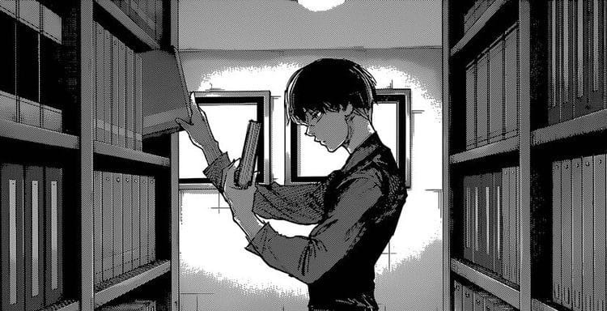
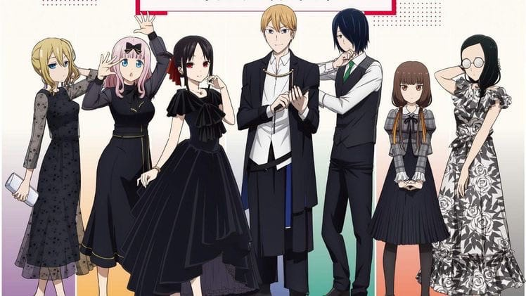
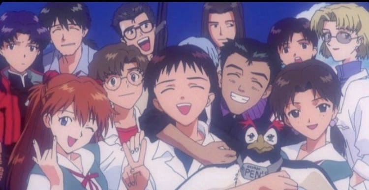
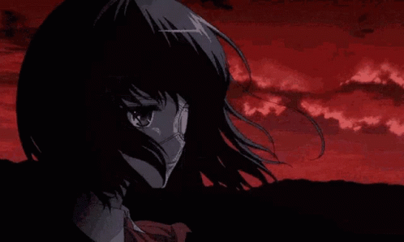

Рейтинг Аниме Сериалов
Аниме - японская мультипликация. В отличие от мультфильмов других стран, предназначенных в основном для просмотра детьми, бо́льшая часть выпускаемого аниме рассчитана на подростковую и взрослую аудитории, и во многом за счёт этого имеет высокую популярность в мире[3]. Аниме отличается характерной манерой отрисовки персонажей и фонов[1]. Издаётся в форме телевизионных сериалов, а также фильмов, распространяемых на видеоносителях или предназначенных для кинопоказа[4]. Сюжеты могут описывать множество персонажей, отличаться разнообразием мест и эпох, жанров и стилей.
Токийский Гуль

Япония , альтернативная реальность. В этом мире параллельно с людьми существует раса гулей - созданий, стоящих выше людей в пищевой цепи, то есть людоедов. Тем не менее, людям удаётся сосуществовать с ними в относительном мире, однако стычки время от времени случаются. Под такую раздачу попадает обычный школьник Канеки, который становится жертвой могущественной женщины-гуля. Чудом пережив нападение, Канеки узнаёт, что взамен утраченных человеческих органов ему пересадили органы гуля. Кто же он теперь - человек или гуль? Ему предстоит пройти долгий путь самоопределения и найти своё место в мире.
Госпожа Кагуя

В подростковом возрасте ребята всячески пытаются выделиться среди других. Подростки стараются пробудить в себе различные таланты, а также освоить уникальные навыки. Вот только в академии Сюити очень сложно чем-то выделиться, ведь все студенты не только имеют влиятельные и богатые семьи, но и являются настоящими гениями. Дирекция престижной академии гордится своими учениками, но с первого года обучения лучшими студентами считает Миюки Широгане и Кагую Шиномию. Эти ребята обладают удивительным интеллектом, а также имеют заслуги в спорте. Кагуя и Миюки давно возглавляют студенческий совет, и они имеют большое влияние на всех студентов. Вот только проблема в том, что элитные ученики академии никак не могут решить кто из них лучше. С первых дней обучения Широгане и Шиномия влюбились друг в друга, но никогда об этом не говорили. Причиной очевидной и в то же время тайной влюблённости является гордость и непреодолимое чувство собственного превосходства. Ребята вечно соревнуются между собой и хотят доказать, что именно одному из них принадлежит высшая ступенька на пьедестале первенства.
5 Невест

Один из лучших учеников школы Футаро Уэсуги привык добиваться поставленных целей. Юноша любит тишину и одиночество, а потому он не стремится завести много друзей. Всё свободное время парень уделяет учёбе, а потому он имеет наивысшие баллы по всем предметам. Однажды Уэсуги попал в неловкую ситуацию, находясь в школьной столовой. Футаро привык обедать в одиночестве, но за его столом сидела симпатичная девушка, которая была одета в форму другого учебного заведения. Долго не думая юноша попросил удалиться девчонку, но школьница продолжала сидеть за столом. Уэсуги заметил, что обед незнакомки стоил очень дорого, а девчонка случайно увидела, что наглый парень имеет сто баллов за контрольную работу. Дерзкая девушка представилась Ицуки Накано и после этого попросила наглеца стать её репетитором. Вначале отличник отнекивался, но после звонка сестры он согласился помочь Ицуки. Оказалось, что у семьи мальчишки возникли финансовые проблемы. Вскоре к юноше подошла ещё одна красотка, которая также попросила помощи, а после неё ещё три девчонки с аналогичной просьбой. Футаро был шокирован таким наплывом красавиц в один день, но самое интересное ждёт школьника впереди.
Евангелион

Человечество практически уничтожено некой неземной силой, известной как Ангелы. Остатки людской расы из организации NERV отчаянно ищут способы защитить планету от угрозы, создавая гигантских биороботов под кодовым названием «Евы». Управлять ими могут лишь подростки, да и то не все - только самые совместимые. Глава проекта Гендо Икари вызывает в штаб своего сына Синдзи, чтобы тот стал пилотом новой модели. На плечи юноши возлагается огромная ответственность за судьбу мира, при этом сам мир как будто бы настроен против него. «Евангелион» - не просто классика, а признанный шедевр японской анимации, который вывел аниме на новую ступень развития не только по качеству изображения, но и по обилию тонкостей, отсылок и психологизмов, по праву заняв свою нишу в списке лучших аниме-тайтлов всех времён.
Другая

У обычного школьника Коити жизнь была не самой счастливой, ведь в раннем возрасте умерла его мама. Отец мало уделял времени сыну, так как он вечно был в экспедициях. Вскоре мальчишке пришлось переехать из Токио в маленький городок Ёкияма к своей родной тёте. Этот переезд был необходим школьнику, ведь у него стремительно развивалась болезнь лёгких, и ему требовался чистый и свежий воздух. В Ёкияме парень поступил в старшую школу, и там ему не сразу удалось найти друзей. Коити начал замечать, что в классе происходят мистические происшествия, но одноклассники как будто этого не замечают. Оказалось, что в школе произошёл несчастный случай, и призрак погибшего Мисаки до сих пор живёт в стенах учебного заведения. Директор и учителя, а также школьники когда-то пригласили мертвеца в класс. Такой поступок стал причиной проклятия, которое невозможно снять. Коити не знал об этой истории, а потому без опасения подружился с Мисаки. Всё это заново активировало старое проклятие и мистических случаев стало намного больше.